Cíle projektu
Cílem tohoto projektu je tvorba aplikace ve virtuální realitě (VR) určeného pro expoziční terapii specifických fobií (např. strach z výšek, klaustrofobie nebo aviofobie), agorafobie nebo sociální fobie zasazeného do komplexního prostředí virtuálního velkoměsta. Prostředí města je vybráno proto, že symptomy pacientů s fobiemi jsou často vázány na situace typické pro prostředí města (např. strach z výšky, strach z cestování veřejnou hromadnou dopravou, strach z interakce s druhými lidmi atd).
Naše aplikace by měla sloužit zejména jako doplněk klasické kognitivně-behaviorální terapie (KBT). Využívá princip VR expoziční terapie (VRET), během které jsou klienti opakovaně a záměrně konfrontováni s obávanými podněty souvisejícími s danou fobií.
VRET terapie slouží zejména jako terapeutická pomůcka v přípravě klienta na expozice později prováděné v reálném prostoru a reálných situacích.
Projekt vzniká ve spolupráci Národního ústavu duševního zdraví s Českým institutem informatiky, robotiky a kybernetiky a Fakultou biomedicínského inženýrství ČVUT s finanční podporou programu ÉTA Technologické agentury ČR (TL03000223).
VR prostředí

Metro

Nemocnice

Letiště

Výšková budova
Ukázka VR scénářů

Akrofobie
Hlavním prvkem expozičního scénáře navrženého pro osoby s akrofobií (strach z výšky) je střecha výškové budovy a prosklený výtah na boku budovy. Budova má celkem 84 pater, v každém z těchto pater je možné vystoupit z výtahu do prosklené chodby a vejít na malý balkon umístěný na konci chodby. V průběhu sezení se pracuje s dalšími nastavitelnými parametry, např. s výškou zábradlí.

Sociální fobie
Pro sociální fobii je určeno zejména prostředí kinosálu tvořeného promítacím plátnem a řadou sedaček. Scénář obsahuje nastavení jednotlivých úrovní obtížnosti, charakterizované zvyšujícím se počtem virtuálních postav, možnostmi usazení participanta a změnou reakcí publika.

Agorafobie
Hlavním prostředím určeným pro osoby s agorafobií je systém metra. Metro obsahuje několik zastávek, kterými vagon projíždí a umožňuje uživateli vystoupit a pohybovat se v prostředí nástupišť. Přestupy jsou označené tak, aby se uživatel mohl sám ve scéně orientovat. Pro stupňování obtížnosti scénáře je možné zvyšovat počet virtuálních postav v okolí uživatele nebo spouštět nečekané stresové situace (např. zaseknutí metra).

Aviofobie
Pro strach z létání bylo navrženo prostředí letiště, na které je možné dojet metrem. Letiště obsahuje dvě patra - první patro slouží k odbavení, druhé patro je dostupné prostřednictvím eskalátorů a zahrnuje bezpečnostní kontrolu, čekání před vstupem do letadla a interiér letadla. Scénář navazuje odletem letadla, který je spojené s animací změny lokace letadla a následnou možností přistání. Je možné zvolit různé stresující situace týkající se např. turbulencí nebo hlášení pilota.
Klaustrofobie
Hlavním prvkem expozičního scénáře navrženého pro osoby s klaustrofobií je výtah. Výšková budova obsahuje několik výtahů různého typu a velikosti, spojených s vizuálními i sluchovými podněty a možností prezentace poruchových situací. Dalším prostředím pro osoby s klaustrofobií jsou podzemní garáže, některá patra jsou dostupná pouze výtahem.
Fobie z nákazy a zdravotnických zařízení
Pro strach ze zdravotnických zařízení a procedur je určeno prostředí nemocnice, obsahující recepci a různá oddělení (vč. odběrů krve nebo zubaře). V prostorech recepce se vyskytuje zdravotnický personál i ostatní návštěvníci budovy, prostředí obsahuje i další prvky související s nemocnicí a nákazou, např. odložené zkumavky nebo znečištěné toalety.
Náš tým
Terapeuti
Pokud máte zájem o software kontaktujte nás
Mám zájemDěkujeme za Váš zájem.
Odpovědná osoba z našeho týmu se Vám na uvedený kontakt ozve co nejdříve to bude možné.
Výstupy
VRETcity
Fajnerová I, Francová A, Jablonská M K, Husák J, Stejskal J, Kotek M (2023)
Aplikace BBPM pro hodnocení kognitivní zátěže (Application for cognitive load assessment)
Hejda J, Sokol M, Kutílek P, Francová A, Fajnerová I (2023)
Expozice stresovým situacím v prostředí virtuálního města. (Metodika)
Fajnerová I, Francová A, Jablonská M, Stopková P, Kotek M. (2024)
Kontakty
Zájem o software
brainvrgroup@gmail.com
Zájem o terapii
vrterapie@nudz.cz